128 s
128 sTop pick
Kai Cenat Calls It Before Trevor Shows Up
Kai calls it: a sniper drops a helicopter and Trevor shows up on the roof.
Reaction: mild

3 streams · 32 moments
128 sTop pick
Kai calls it: a sniper drops a helicopter and Trevor shows up on the roof.
Reaction: mild
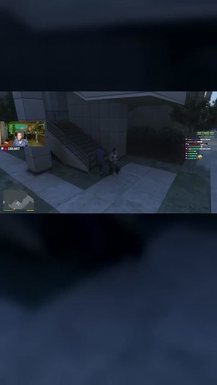
 240 s
240 sBest clip
A burning helicopter crashes onto Michael; MISSION FAILED and Kai asks 'What is this RNG?'
Reaction: strong

 334 s
334 sBest clip
Graveyard standoff: Trevor dares Michael to shoot, a third shot rings out, Michael dives.
Reaction: mild

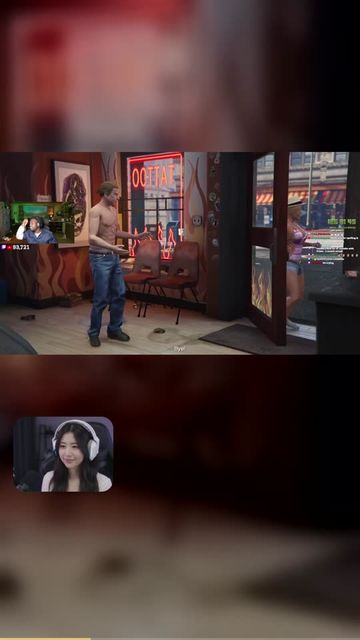
32 sTracey stalls on the way to the therapist, then dives head-first into the car; Kai cannot cope.
Reaction: strong

 32 s
32 sHeist in a tunnel: armoured trucks stopped, guards pulled out, Kai bets the whole series.
Reaction: mild

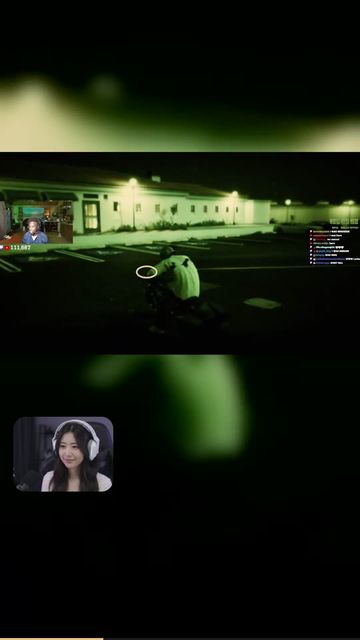
28 sFranklin's bike crash gives MISSION FAILED; Kai: 'All your aura, lost', then the retry loops.
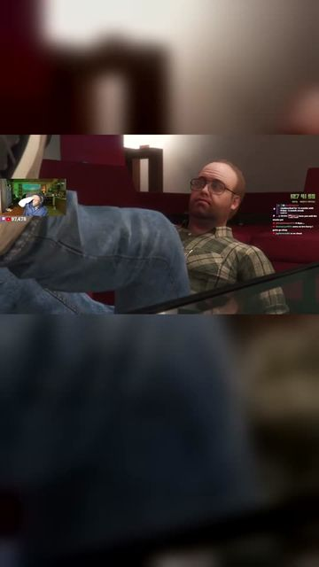
 23 s
23 sKai calls the 'spy route', sneaks into the house, and the crew pulls the heist off.
Reaction: mild
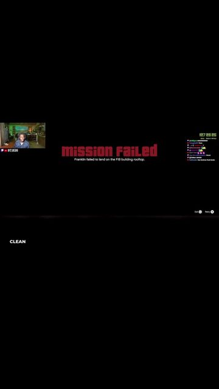
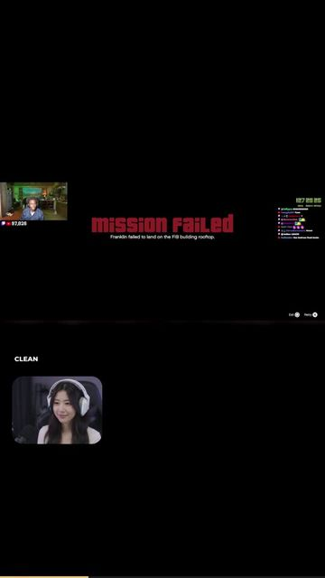
29 sFranklin misses the FIB roof (MISSION FAILED), then a retry with a heli jump and skydive.
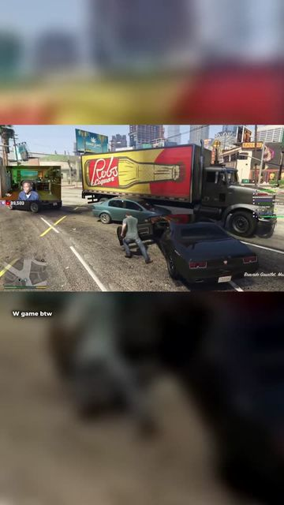
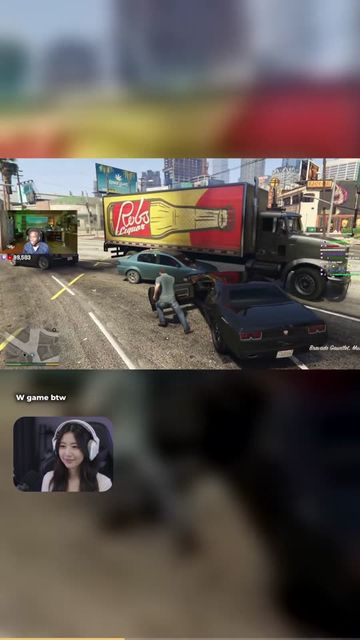
23 sWrong car picked, a street brawl breaks out over a car theft; 'Nobody steals from me.'
Reaction: none
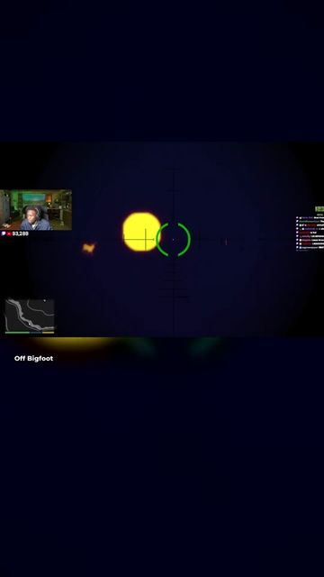
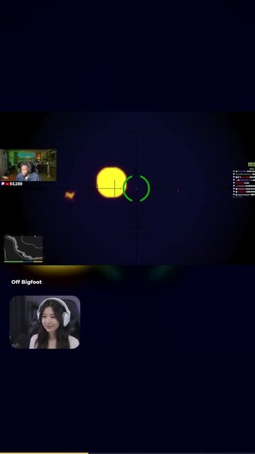
23 sSniping from a hilltop, a helicopter is hit and explodes; 'What is that?'
Reaction: none

 29 s
29 sRappelling down a tower at night, a police air unit spots the crew: 'They got a bird.'
Reaction: none

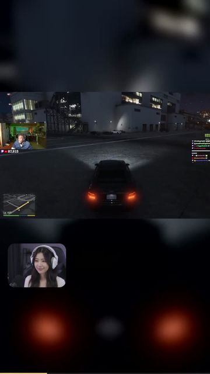
36 sKai riffs 'just take any car and go' as the getaway car leaves the hangar, then answers chat.
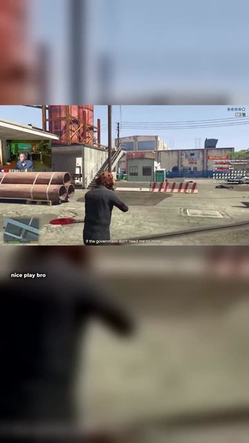
 32 s
32 sCops thin out after a shootout and Kai drives off in a garbage truck with four stars.
Reaction: mild
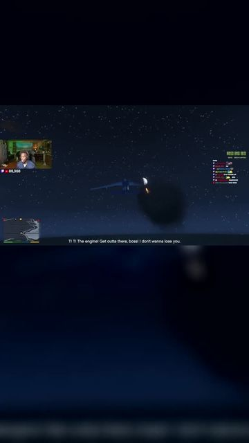
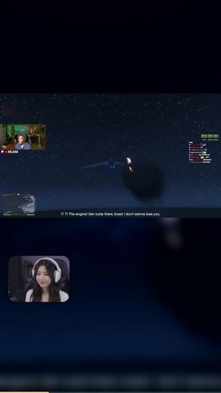
36 sA burning cargo plane trails smoke over the mountains; Trevor runs the hold and bails out.
Reaction: none